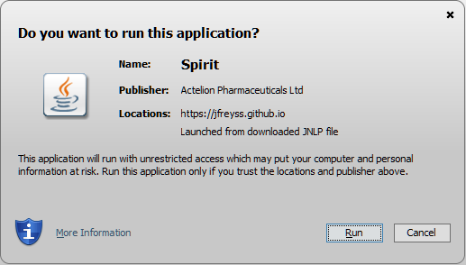

If you have a Windows OS, run the installer:
Spirit-2.1.2.exe
For any other OS. Be sure to have Java 8+ installed, and start Spirit from your browser:
Spirit Webstart
For advanced users or to have a production environment:
Spirit-bin.2.1.2.zip
Troubleshootings
General
- The application asks me to login, but I don't know my login?
- Are you sure you don't have Spirit already configured to work with a user database on your system? You can reset the system (and delete the local database) by deleting the directory ".spirit" under your home directory.
Webstart
- Webstart: Chrome/IE/Safari cannot open this type of file?
- Make sure you have Java installed. You can download it at https://java.com/en/download/
- Webstart: This type of file can harm your computer?
- Chrome may display this warning when you click any jnlp file. Be sure to keep it and open it. Spirit will not harm the computer but create a ".spirit" folder under your home directory to store the configuration and the database
- Webstart: java.lang.UnsupportedClassVersionError exception?
- Your version of Java is tool old, please download the latest version of java. JRE 8+ is required.
- Webstart: The application does not start?
- Did you accept the certificate? Be sure to click "Run" when you get this message
